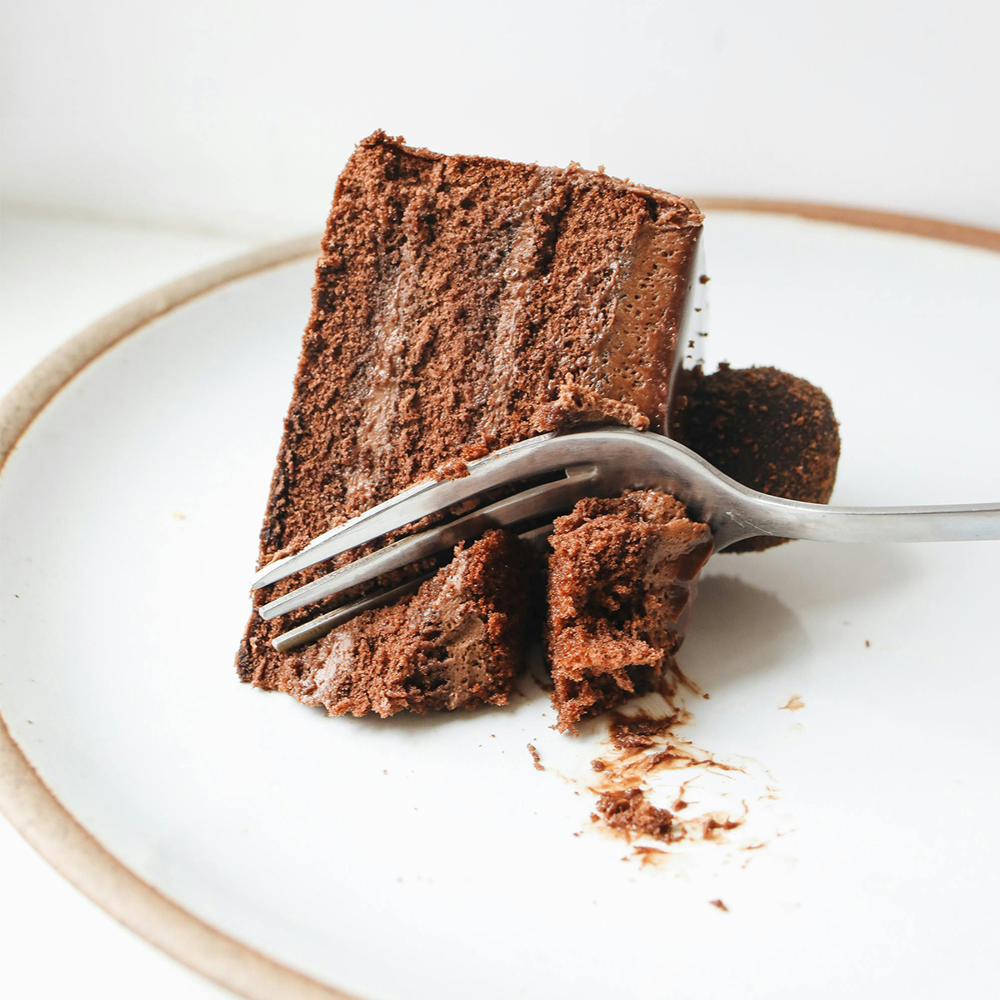

 Chocolate Cake Ingredients 1 and 3/4 cups all-purpose flour 3/4 cup unsweetened cocoa powder 2 cups sugar 1 and 1/2 teaspoons baking powder 1 and 1/2 teaspoons baking soda 1 teaspoon salt 2 large eggs 1 cup whole milk 1/2 cup vegetable oil 2 teaspoons vanilla extract 1 cup boiling water Instructions Preheat your oven to 350°F (175°C). Grease and flour two 9-inch round cake pans. In a large bowl, combine all the dry ingredients. Add the eggs, milk, oil, and vanilla. Beat on medium speed for 2 minutes. Stir in the boiling water (batter will be thin). Pour into prepared pans. Bake for 30-35 minutes or until a toothpick comes out clean. Cool for 10 minutes, then remove from pans to cool completely.